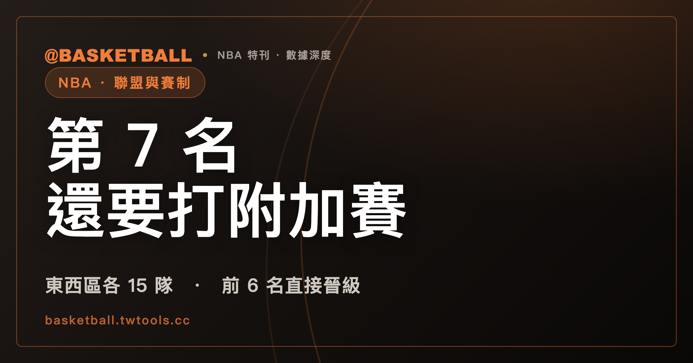

NBA 有幾隊、怎麼打？30 隊分區、82 場與季後賽晉級指南
NBA 共有 30 隊，東、西區各 15 隊，每區再分 3 組。標準例行賽每隊 82 場；分區前 6 名直接晉級季後賽，第 7 到 10 名透過附加賽爭最後 2 席，正式季後賽每輪採七戰四勝制。

NBA｜聯盟與賽制入門
例行賽打完排第 7，為什麼還沒拿到季後賽門票？因為 NBA 每區雖有 8 個季後賽名額，前 6 名才是直接晉級；第 7 到 10 名之間，還有一關附加賽。
認識 NBA，可以先看一支球隊屬於東區還是西區。這決定它和誰爭季後賽位置，再沿著例行賽、附加賽、季後賽往下看。至於季中的 NBA Cup，則穿插在例行賽裡進行。
2026 年 11 月 7 日更新：聯盟架構與賽制依下列官方說明整理；冠軍表與戰績例子固定使用 2023-24 至 2025-26 球季，並非 2026-27 的即時排名。
30 隊先分東、西區，再各分成 3 組
NBA（National Basketball Association）共有 30 支球隊。東區（Eastern Conference）15 隊，西區（Western Conference）15 隊；每區又有 3 個分組（Division），每組 5 隊。
| 分區 | 旗下分組 | 每組隊數 |
|---|---|---|
| 東區 | 大西洋組、中央組、東南組 | 各 5 隊 |
| 西區 | 西北組、太平洋組、西南組 | 各 5 隊 |
分區與分組是不同層級。看季後賽競爭時，主要查東區或西區的整區排名；分組會影響賽程安排，也會在同戰績比序的特定條件裡出現。拿到分組冠軍，並不保證季後賽高種子。
例如，一支東區球隊要爭的是東區前 6 名，或至少進入第 7 到 10 名的附加賽範圍。把東、西區 30 隊混成一張表，直接取全聯盟前 16 名，並不是 NBA 的晉級方式。
82 場例行賽裡，穿插著 NBA Cup
標準例行賽每隊打 82 場，近年的球季通常從 10 月進行到隔年 4 月，實際日期依當季公告。
NBA Cup 是自 2023-24 球季開始的季中競賽。各隊先打小組賽，晉級者再進入淘汰賽。除了冠軍戰，Cup 場次都同時計入例行賽戰績；冠軍戰另計。
因此，看到一場球同時標示「例行賽」與「Cup」，並沒有衝突。它既可能影響例行賽排名，也可能影響小組能否出線；但 Cup 冠軍與球季最後的 NBA 總冠軍，是分開產生的。
這也解釋賽程表為什麼會留白。NBA 在 2026 年 8 月 13 日公布各隊 82 場中的 80 場安排，另 2 場要依 Cup 小組賽結果決定。「每隊打 82 場」與「公布時每一場都已排定」不能畫上等號。
前 6 名直接晉級，第 7 到 10 名再爭 2 席
附加賽（Play-In Tournament）在例行賽結束後、正式季後賽之前進行。東、西區各自打，規則相同：
| 對戰 | 贏球之後 | 輸球之後 |
|---|---|---|
| 第 7 名主場對第 8 名 | 取得季後賽第 7 種子 | 還有一次爭第 8 種子的機會 |
| 第 9 名主場對第 10 名 | 再對上第 7、8 名之戰的敗方 | 淘汰 |
| 上述兩場留下的球隊交手 | 取得季後賽第 8 種子 | 淘汰 |
第 7、8 名只要贏 1 場就能晉級，第一場輸了還有下一場。第 9、10 名則必須連贏 2 場，才拿得到季後賽門票。
附加賽的現行四隊版本自 2020-21 球季採用，2022 年成為常設制度。它讓例行賽第 8 名仍可能出局，也讓第 9、10 名保有晉級機會。第 6 與第 7 名之間，因而多了一個「是否還要打附加賽」的差別。
正式季後賽每區 8 隊，每輪要拿 4 勝
附加賽結束後，東、西區各有 8 隊進入正式季後賽。各區先打首輪，再打分區準決賽、分區決賽；東、西區冠軍最後交手，爭 NBA 總冠軍。
每一輪都採七戰四勝制（Best-of-Seven）：先贏 4 場的球隊晉級，最少打 4 場、最多打 7 場。系列賽不是打到第 7 場才算結束，4:0、4:1、4:2 都可以分出勝負。
例行賽的勝場不會帶進系列賽。2025-26 球季，尼克例行賽 53 勝、馬刺 62 勝，總冠軍賽卻由尼克以 4:1 獲勝。排名決定進入季後賽時的位置，之後仍要逐輪贏球。
最近奪冠，與隊史冠軍最多，是兩種問題
以下是 2023-24 到 2025-26 的總冠軍賽結果：
| 賽季 | 總冠軍 | 亞軍 | 系列賽比數 |
|---|---|---|---|
| 2023-24 | 波士頓塞爾提克（Boston Celtics） | 達拉斯獨行俠（Dallas Mavericks） | 4:1 |
| 2024-25 | 奧克拉荷馬雷霆（Oklahoma City Thunder） | 印第安納溜馬（Indiana Pacers） | 4:3 |
| 2025-26 | 紐約尼克（New York Knicks） | 聖安東尼奧馬刺（San Antonio Spurs） | 4:1 |
3 季的冠軍與亞軍都沒有重複。這能說明這 3 季的結果，卻不能單靠一張表，就判斷下一季誰最強。
把時間拉長，隊史冠軍數的排序又不同。以 2025-26 球季結束後的官方紀錄為準，塞爾提克有 18 冠，湖人有 17 冠；尼克拿下的是隊史第 3 冠，前兩次在 1970、1973 年。
所以，「尼克剛拿到總冠軍」談的是這一季；「塞爾提克冠軍最多」談的是隊史累積。兩句可以同時成立。
用一個已結束的球季，練習讀排名
以下保存 2025-26 例行賽兩區前三名的戰績，作為排名的例子。
東區前三：
| 排名 | 球隊 | 戰績 | 勝率 | 落後場次 |
|---|---|---|---|---|
| 1 | 底特律活塞（Detroit Pistons） | 60 勝 22 敗 | .732 | — |
| 2 | 波士頓塞爾提克（Boston Celtics） | 56 勝 26 敗 | .683 | 4 |
| 3 | 紐約尼克（New York Knicks） | 53 勝 29 敗 | .646 | 7 |
西區前三：
| 排名 | 球隊 | 戰績 | 勝率 | 落後場次 |
|---|---|---|---|---|
| 1 | 奧克拉荷馬雷霆（Oklahoma City Thunder） | 64 勝 18 敗 | .780 | — |
| 2 | 聖安東尼奧馬刺（San Antonio Spurs） | 62 勝 20 敗 | .756 | 2 |
| 3 | 丹佛金塊（Denver Nuggets） | 54 勝 28 敗 | .659 | 10 |
東區第 1 的活塞比尼克多 7 勝，最後進入總冠軍賽的仍是尼克；西區第 1 的雷霆則在分區決賽輸給第 2 的馬刺。這是該季已發生的結果，不需要把例行賽的名次改掉才能解釋。
查網站目前的排名，可以到戰績頁，先確認賽季與更新日期，再看勝敗、勝率與所在位置。歷史表與新球季排名應分開讀。
沒有比賽的日子，也有選秀、簽約與交易
例行賽之外，球隊還會透過選秀、自由球員簽約與交易調整陣容。一般年度安排是 6 月選秀、夏季自由市場，以及球季中的交易截止日；每季的確切日期要看聯盟公告。
交易截止後，球隊無法再用一般交易繼續換人，但不代表只能靠原班人馬打到底。簽自由球員、棄約認領等補人方式，另有薪資、名單與資格規定。
剛開始看 NBA，不必一次記住所有日期。先追一支球隊的分區排名：前 6 名是否守得住，第 7 到 10 名能否闖過附加賽；進入季後賽後，再逐輪看誰先拿到 4 勝。
常見問題
NBA 有幾支球隊，怎麼分組？
共有 30 隊，東、西區各 15 隊；每區再分 3 個分組，每組 5 隊。東區分大西洋、中央、東南組，西區分西北、太平洋、西南組。季後賽資格主要看整個東區或西區的排名，分組條件也會出現在特定同戰績比序規則裡。
NBA 例行賽打幾場，球季多長？
標準例行賽每隊 82 場，近年通常從 10 月打到隔年 4 月；接著進行附加賽與季後賽，總冠軍賽一般在 6 月。實際日期依當季公告，Cup 冠軍戰不算在例行賽 82 場之內。
附加賽（Play-In）是什麼，為什麼會有這個賽制？
東、西區第 7 到 10 名，各自爭該區第 7、第 8 季後賽種子的比賽。第 7、8 名有兩次贏 1 場的機會，第 9、10 名則必須連贏 2 場；前 6 名直接進季後賽。現行四隊版本自 2020-21 球季採用，2022 年成為常設制度。
NBA 隊史冠軍數最多的球隊是哪一隊？
以 2025-26 球季結束後的紀錄為準，是 18 冠的波士頓塞爾提克，洛杉磯湖人以 17 冠居次。這是隊史累積，不是當季戰力排名。
2025-26 賽季的總冠軍是誰？這座冠軍有什麼特別之處？
紐約尼克，以 4:1 擊敗聖安東尼奧馬刺，取得隊史第 3 冠。前兩冠在 1970、1973 年，這次相隔 53 年；尼克的例行賽戰績是東區第 3 的 53 勝 29 敗。
資料來源
- NBA 球隊總表：分區與分組架構。
- NBA 附加賽說明；NBA 2026 年季後賽與總冠軍賽結果。
- NBA Cup 官方常見問題：例行賽場次與 Cup 冠軍戰的關係。
- NBA 歷史冠軍表。
- NBA 2026-27 球季賽程公告。
- 2025-26 例行賽戰績整理自 ESPN 公開資料，使用本站截至 2026-06-14 的終局紀錄。